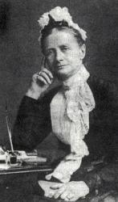
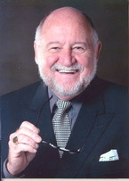

|
|
【主已復活】 |
|
1 Christ is risen, Christ is risen! 2 Come, you sad and fearful hearted, 3 Come with high and holy hymning; 4 Christ is risen, Christ is risen!
|
主已復活！主已復活！歡然見證主復活； |
|
|
|
|
|
|


世紀頌讚213主已復活 https://youtu.be/3cRMXVLO_kc -
He Is Risen (Music Video) | The Tabernacle Choir https://youtu.be/kCJtfBR7T9E -
https://www.smallchurchmusic.com/PlayerSite.php?PID=1&SID=
| Text: | He Is Risen! He Is Risen! |
| Author : | Cecil F. Alexander |
| Tune: | HE IS RISEN |
| Composer: | Bob Burroughs |
| Short Name: | Cecil Frances Alexander |
| Full Name: | Alexander, Cecil Frances, 1818-1895 |
| Birth Year: | 1818 |
| Death Year: | 1895 |
As a small girl, Cecil Frances Humphries (b. Redcross, County Wicklow, Ireland, 1818; Londonderry, Ireland, 1895)

wrote poetry in her school's journal. In 1850 she married Rev. William Alexander, who later became the Anglican primate (chief bishop) of Ireland. She showed her concern for disadvantaged people by traveling many miles each day to visit the sick and the poor, providing food, warm clothes, and medical supplies. She and her sister also founded a school for the deaf. Alexander was strongly influenced by the Oxford Movement and by John Keble's Christian Year. Her first book of poetry, Verses for Seasons, was a "Christian Year" for children. She wrote hymns based on the Apostles' Creed, baptism, the Lord's Supper, the Ten Commandments, and prayer, writing in simple language for children. Her more than four hundred hymn texts were published in Verses from the Holy Scripture (1846), Hymns for Little Children (1848), and Hymns Descriptive and Devotional ( 1858).
Bert Polman
| Short Name: | Bob Burroughs |
| Full Name: | Burroughs, Bob, 1937- |
| Birth Year: | 1937 |
Bob Burroughs is a composer and arranger of choral music. He has served as a pastor and taught music at three universiti
| Short Name: | Joachim Neander |
| Full Name: | Neander, Joachim, 1650-1680 |
| Birth Year: | 1650 |
| Death Year: | 1680 |
Neander, Joachim, was born at Bremen, in 1650,

as the eldest child of the marriage of Johann Joachim Neander and Catharina Knipping, which took place on Sept. 18, 1649, the father being then master of the Third Form in the Paedagogium at Bremen. The family name was originally Neumann (Newman) or Niemann, but the grandfather of the poet had assumed the Greek form of the name, i.e. Neander. After passing through the Paedagogium he entered himself as a student at the Gymnasium illustre (Academic Gymnasium) of Bremen in Oct. 1666. German student life in the 17th century was anything but refined, and Neander seems to have been as riotous and as fond of questionable pleasures as most of his fellows. In July 1670, Theodore Under-Eyck came to Bremen as pastor of St. Martin's Church, with the reputation of a Pietist and holder of conventicles. Not long after Neander, with two like-minded comrades, went to service there one Sunday, in order to criticise and find matter of amusement. But the earnest words of Under-Eyck touched his heart; and this, with his subsequent conversations with Under-Eyck, proved the turning-point of his spiritual life. In the spring of 1671 he became tutor to five young men, mostly, if not all, sons of wealthy merchants at Frankfurt-am-Main, and accompanied them to the University of Heidelberg, where they seem to have remained till the autumn of 1673, and where Neander learned to know and love the beauties of Nature. The winter of 1673-74 he spent at Frankfurt with the friends of his pupils, and here he became acquainted with P. J. Spener (q.v.) and J. J. Schütz (q.v.) In the spring of 1674 he was appointed Rector of the Latin school at Düsseldorf (see further below). Finally, in 1679, he was invited to Bremen as unordained assistant to Under-Eyck at St. Martin's Church, and began his duties about the middle of July. The post was not inviting, and was regarded merely as a stepping stone to further preferment, the remuneration being a free house and 40 thalers a year, and the Sunday duty being a service with sermon at the extraordinary hour of 5 a.m. Had he lived, Under-Eyck would doubtless have done his best to get him appointed to St. Stephen's Church, the pastorate of which became vacant in Sept., 1680. But meantime Neander himself fell into a decline, and died at Bremen May 31, 1680 (Joachim Neander, sein Leben und seine Lieder. With a Portrait. By J. F. Iken, Bremen, 1880; Allgemeine Deutsche Biographie, xxiii. 327, &c.)
Neander was the first important hymn-writer of the German Reformed Church since the times of Blaurer and Zwick. His hymns appear to have been written mostly at Düsseldorf, after his lips had been sealed to any but official work. The true history of his unfortunate conflict has now been established from the original documents, and may be summarized thus.

Bob Burroughs's compositions have been widely published by a variety of
companies including GIA, AGHER, AMSI, Choristers Guild, Exaltation
Publications, Heritage Music Press, Laurel Press, Lorenz Publishing Company,
Monarch Music, The Sacred Music Press, and Triune Music. In addition, Mr.
Burroughs authored This
Idea Will Work.
Mr. Burroughs hails from Tazewell, Virginia. He and his wife, Esther, were
married in 1958, and they are the parents of two children, David Lloyd and
Melody. They are also the proud grandparents of four granddaughters and one
grandson.
Mr. Burroughs attained an A.A. in 1957 from Mars Hill Junior College, a
B.M.E. in 1959 from Oklahoma Baptist University, and an M.C.M. in 1961 from
Southwestern Baptist Theological Seminary double majoring in theory and
composition. Mr. Burroughs is retired, but active, doing choral clinics,
festivals and spends lots of time continuing to compose and arrange, and
working in his yard. He recently obtained the status of Master Gardner from
the Clemson University Master Gardner Program.
Burroughs has served churches both full-time and part time, as well as
teaching at three universities as Composer-In-Residence. He served as the
Director of the Florida Baptist Convention Church Music Department until his
retirement in 2002.
https://www.giamusic.com/store/artists/bob-burroughs
Burroughs lives in Greer, South Carolina.